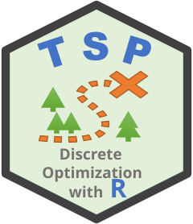
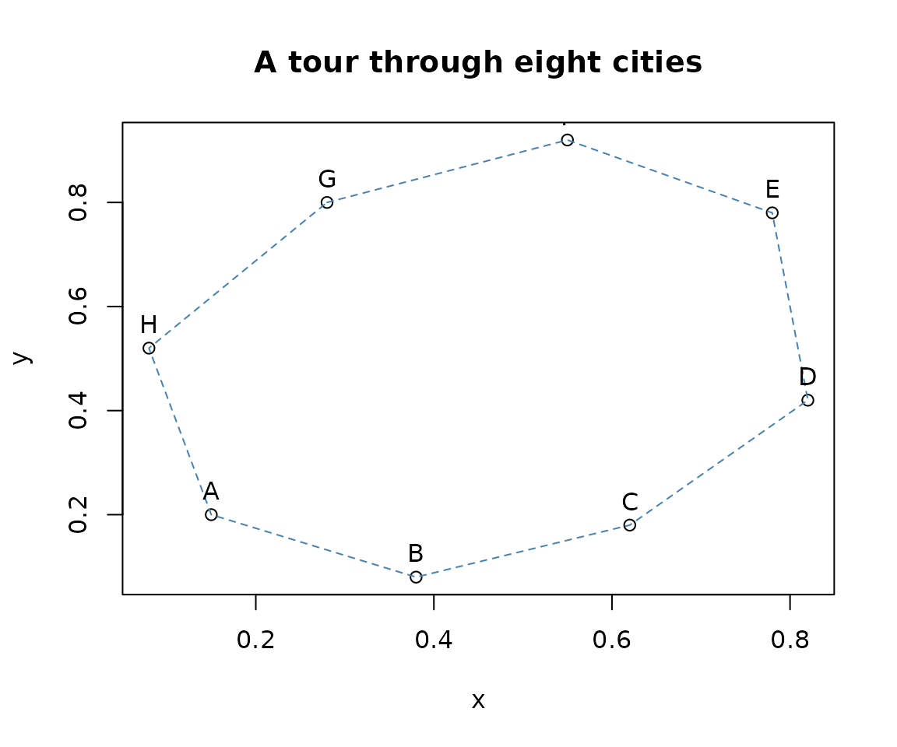

Getting started with TSP
Michael Hahsler and Kurt Hornik
Source:vignettes/TSP.Rmd
TSP.RmdThe traveling salesperson problem asks for the shortest round trip that visits each city exactly once. The TSP package provides classes for representing traveling salesperson problems, several construction and improvement heuristics, and interfaces to the external Concorde solver.
This vignette covers the typical workflow:
- Create a problem from coordinates or a distance matrix.
- Find a tour with
solve_TSP(). - Inspect, compare, and visualize solutions.
Create a problem from coordinates
For locations described by coordinates, create a Euclidean traveling
salesperson problem with ETSP(). Row names are used as city
labels.
cities <- data.frame(
x = c(0.15, 0.38, 0.62, 0.82, 0.78, 0.55, 0.28, 0.08),
y = c(0.20, 0.08, 0.18, 0.42, 0.78, 0.92, 0.80, 0.52),
row.names = LETTERS[1:8]
)
problem <- ETSP(cities)
problem
#> object of class 'ETSP'
#> 8 cities (Euclidean TSP)
n_of_cities(problem)
#> [1] 8
labels(problem)
#> [1] "A" "B" "C" "D" "E" "F" "G" "H"An ETSP stores the coordinates directly. Most built-in
heuristics convert it to a distance-based TSP internally.
For very large coordinate sets this distance matrix can require
substantial memory.
Solve the problem
solve_TSP() returns a TOUR, an integer
permutation giving the order in which the cities are visited. The
default combines arbitrary insertion with 2-opt improvement.
tour <- solve_TSP(problem, seed = 123)
tour
#> object of class 'TOUR'
#> result of method 'arbitrary_insertion+two_opt' for 8 cities
#> tour length: 2.430432
as.integer(tour)
#> [1] 7 6 5 4 3 2 1 8
labels(tour)
#> [1] "G" "F" "E" "D" "C" "B" "A" "H"
tour_length(tour)
#> [1] 2.430432The stored tour length includes the final edge from the last city back to the first. A TSP solution is therefore a cycle, not an open path.
Plot the coordinates and the resulting tour with
plot():
plot(problem, tour, main = "A tour through eight cities", tour_col = "steelblue")
Create a problem from distances
If pairwise distances or costs are already available, pass a
dist object or a symmetric matrix to
TSP().
distance_problem <- TSP(dist(cities))
distance_problem
#> object of class 'TSP'
#> 8 cities (distance 'euclidean')
distance_tour <- solve_TSP(distance_problem, method = "nn", start = 1)
distance_tour
#> object of class 'TOUR'
#> result of method 'nn' for 8 cities
#> tour length: 2.430432
tour_length(distance_tour)
#> [1] 2.430432TSP() does not require distances to be Euclidean; they
can represent any symmetric dissimilarity or cost. Missing connections
can be represented by Inf, while NA values are
not allowed.
Choose and compare heuristics
Construction heuristics build a tour from scratch. Common choices
include nearest neighbor ("nn") and nearest, cheapest,
farthest, or arbitrary insertion. Improvement heuristics such as
"two_opt" start from an existing tour and try to shorten
it.
methods <- c(
"nearest neighbor" = "nn",
"nearest insertion" = "nearest_insertion",
"cheapest insertion" = "cheapest_insertion",
"repetitive nearest neighbor" = "repetitive_nn"
)
tours <- lapply(methods, function(method) {
solve_TSP(problem, method = method, seed = 123)
})
sort(vapply(tours, tour_length, numeric(1)))
#> repetitive nearest neighbor nearest neighbor
#> 2.430432 2.430432
#> nearest insertion cheapest insertion
#> 2.430432 2.430432Add two_opt = TRUE to refine a constructed tour, or
explicitly improve an existing tour:
initial_tour <- solve_TSP(problem, method = "nn", start = 1)
improved_tour <- solve_TSP(
problem,
method = "two_opt",
tour = initial_tour
)
c(
initial = tour_length(initial_tour),
improved = tour_length(improved_tour)
)
#> initial improved
#> 2.430432 2.430432Randomized methods support seed for reproducibility and
rep for repeated starts. For example, the following returns
the shortest of 20 random tours, each followed by 2-opt improvement:
repeated_tour <- solve_TSP(
problem,
method = "random",
rep = 20,
two_opt = TRUE,
seed = 123
)
tour_length(repeated_tour)
#> [1] 2.430432These methods are heuristics: a short tour is not necessarily an
optimal tour. The "concorde" method can find an exact
solution, and "linkern" provides the Chained Lin-Kernighan
heuristic, but both require a separately installed Concorde executable.
See ?Concorde for setup instructions.
Asymmetric problems
When the cost from city i to city j differs from
the reverse direction, create an asymmetric problem with
ATSP() from a square cost matrix.
cost <- matrix(
c(
0, 4, 1, 3,
2, 0, 5, 1,
3, 2, 0, 4,
6, 3, 2, 0
),
nrow = 4,
byrow = TRUE,
dimnames = list(LETTERS[1:4], LETTERS[1:4])
)
asymmetric_problem <- ATSP(cost)
asymmetric_tour <- solve_TSP(asymmetric_problem, method = "nn", start = 1)
asymmetric_tour
#> object of class 'TOUR'
#> result of method 'nn' for 4 cities
#> tour length: 10
tour_length(asymmetric_tour)
#> [1] 10Most built-in heuristics work directly with both TSP and
ATSP objects. Solvers that only accept symmetric problems
can use the package’s automatic ATSP-to-TSP reformulation; see
?reformulate_ATSP_as_TSP.
Where to go next
The most useful help pages are:
-
?solve_TSPfor all solvers and their control parameters; -
?TSP,?ETSP, and?ATSPfor problem representations; -
?TOURand?tour_lengthfor working with solutions; -
?read_TSPLIBand?write_TSPLIBfor TSPLIB files; and -
?insert_dummyand?cut_tourfor turning a cycle into one or more paths.